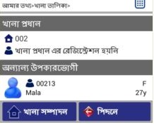

আমার তথ্যঃ
- আমার প্রোফাইলঃ আপনার কোড নাম্বার, নিয়োজিত চরের নাম-ঠিকানা এবং নিকটস্থ রেফারাল সেন্টারের তালিকা উল্লেখ করা আছে।
- নিকটস্থ রেফারাল সেন্টারঃ আপনার আশেপাশের রেফারাল সেন্টারের তালিকা দেখুন।
- খানা তালিকাঃ আপনি যে খানাগুলো নিবন্ধন করেছেন তার তালিকা।
উল্লেখ্য যে, কিছু খানার সারি লাল রঙে আবৃত থাকতে পারে। সেক্ষেত্রে বুঝতে হবে সেই খানার জিপিএস রিডিং নেওয়া হয়নি কিম্বা খানা প্রধানের রেজিস্ট্রেশন হয়নি।
খানা সম্পাদনা করতে--
- সংশোধনযোগ্য খানার উপর স্পর্শ করুন।
- 'খানা সম্পাদনা' স্পর্শ করে খানা নিবন্ধনের ফরমে প্রবেশ করুন।
- উপযুক্ত তথ্য সংযোজন বিয়োজনের পর সেভ করুন।
সম্পাদনযোগ্য খানার তালিকা

- উপকারভোগীর তালিকাঃ আপনি বিভিন্ন খানায় যেসব উপকারভোগীকে নিবন্ধন করেছেন তার তালিকা।
- উপকারভোগীর তথ্য পরিবর্তনঃ উপকারভোগী নিবন্ধনকালে যে কোন ভুল তথ্য সংশোধন করা যায়।
- 'উপকারভোগীর তথ্য পরিবর্তন' এর উপর স্পর্শ করে উপকারভোগীর খানা নাম্বার দিন।
- উপকারভোগী সিলেক্ট করে নিবন্ধন প্রক্রিয়ায় প্রবেশ করুন।
- পরিবর্তিত তথ্য সংযোজন বিয়োজন করে সার্ভারে আপলোড করুন।